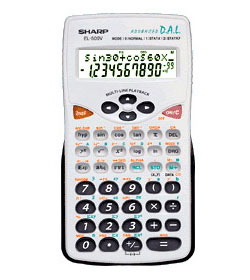
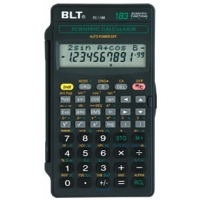

WebCal 計數機網頁
Sharp EL-509V / EL-531VH簡介
BLT SC-118B / SC-183簡介
|  |  |
| Sharp EL-509V / EL-531VH | BLT SC-183 / SC118B |
Sharp EL-509V / EL-531VH為香港中學會考及高級程度會考的准用計數機之一，與EL-506V亦屬同一系列的計算機，使用高級算式順序輸入法(A.D.A.L.)，即是將計算式依書寫的順序輸入計算機。功能上比506V明顯遜色，除了沒有程式功能外，亦沒有聯立三元一次方程、微積分函數、基數、複數、單位轉換、物理常數、置換運算及其它特別回歸計算等等的功能，不過擁有會考高考所需要的基本計算功能，亦有小數轉換分數功能，統計功能亦包括有線性回歸等，而售價亦相當便宜，大約七十幾元，適合一些不使用程式及特別功能的朋友。
BLT計數機在2005年開始在香港會考可使用型號的名單中出現，現時可用於會科學函數計算機型號，以SC-183較好一點，SC-118B暫時不在名單中，但它的功能與SC-183完全一樣。這兩部計算機其實在功能和用法上亦與Sharp EL-509V相同，只是在按鍵位置編排上有所不同，所以EL-509V的參考資料亦適用於這兩部計算機，售價方面比EL-509V更便宜(大約三十幾元)，不過現時在香港很少地方有售，而且沒有會考使用的標籤，若果購買BLT計算機用作會考，就要在指定時間攜同該計算機到考評局加印標籤，相當不便，希望日後BLT計算機會有會考標籤。
2. EL-509V / EL-531VH說明書 (英文)
3. EL-531V系列操作指引 (英文)
4. 計數機小技巧
5. 其它計數機簡介
6. 如何選購會考計數機
7. 網站索引
8. 聯絡網主